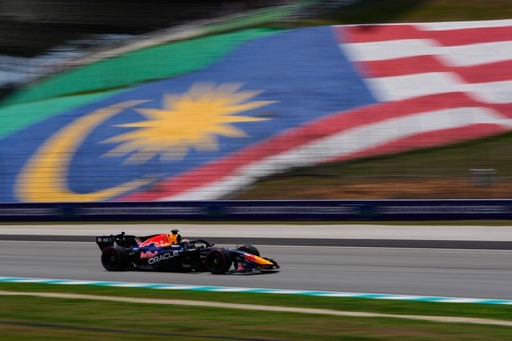

Bienvenidos al Gran Premio de Barhein

En este sitio web encontrarás información sobre una carrera de Fórmula 1, su circuito, los pilotos y los resultados.

En este sitio web encontrarás información sobre una carrera de Fórmula 1, su circuito, los pilotos y los resultados.